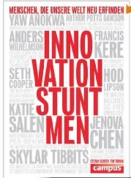
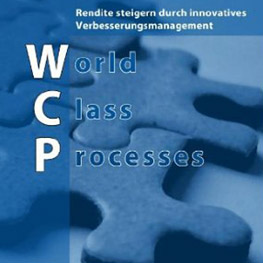

Der Weg – Effizienz im Büro mit Kaizen-Methoden
Sabine Leikep, Klaus Bieber, Effizienz im Büro
Sie wollen mehr Effizienz im Büro? Schauen Sie genauer hin: “Papierstapel, Suchzeiten, hohe Durchlaufzeiten, Engpässe…Dies sind die verborgenen Schätze der Verschwendung, welche in den Büros schlummern” Zwei absolut praxiserprobte Fachleute haben in diesem Buch wunderbar, an der unterhaltsamen Geschichte von Tim Tacho, einen möglichen Weg zur Kaizen-Einführung in Unternehmen beschrieben. Die Geschichte scheint einfach, aber es steckt sehr viel Information und Wissen drin, was sich in der Praxis gut erproben lässt. Ich persönlich finde es prima, dass sehr umgangssprachlich und ohne kompliziertes Vokabular alle notwendigen Schritte um Kaizen einzuführen, Unternehmensleitung und Mitarbeiter in’s Boot zu holen, beschrieben werden.
Weitere Artikel

Innovation Stuntman-Inspiration pur
In diesem Buch lernen Sie Menschen kennen, die mit ihrer Arbeit unsere Welt neu erfinden. »Innovation Stuntmen« führt Sie auf eine reichhaltig bebilderte Reise durch die aufregendsten Felder der Innovation. Ich bin immer wieder …

World Class Processes-Rendite steigern Verbesserungsmanagement
Richard Glahn “In nur fünf Jahren die Rendite von knapp drei Prozent auf einen guten zweistelligen Prozentsatz steigern-Fiktion oder Wirklichkeit? …Mit den Darstellungen in diesem Buch wird die Vorgehensweise für jedes …